Data Visualizations
Below are the map and time series visualizations for the dataset variables.
Spatial Maps
 BC_AX_historical_2014-12-18 00:00:00
BC_AX_historical_2014-12-18 00:00:00
 BC_N_historical_2014-12-18 00:00:00
BC_N_historical_2014-12-18 00:00:00
 OM_NI_historical_2014-12-18 00:00:00
OM_NI_historical_2014-12-18 00:00:00
 SO2_historical_2014-12-18 00:00:00
SO2_historical_2014-12-18 00:00:00
 SO4_PR_historical_2014-12-18 00:00:00
SO4_PR_historical_2014-12-18 00:00:00
 huss_historical_2014-12-30 12:00:00
huss_historical_2014-12-30 12:00:00
 pr_historical_2014-12-30 12:00:00
pr_historical_2014-12-30 12:00:00
 psl_historical_2014-12-30 12:00:00
psl_historical_2014-12-30 12:00:00
 sfcWind_historical_2014-12-30 12:00:00
sfcWind_historical_2014-12-30 12:00:00
 tas_historical_2014-12-30 12:00:00
tas_historical_2014-12-30 12:00:00
 tasmax_historical_2014-12-30 12:00:00
tasmax_historical_2014-12-30 12:00:00
 tasmin_historical_2014-12-30 12:00:00
tasmin_historical_2014-12-30 12:00:00
Time Series
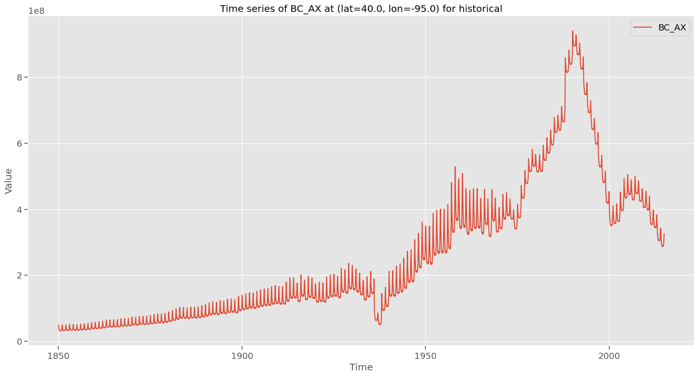
BC_AX_historical_40.0_-95.0
BC_N_historical_40.0_-95.0
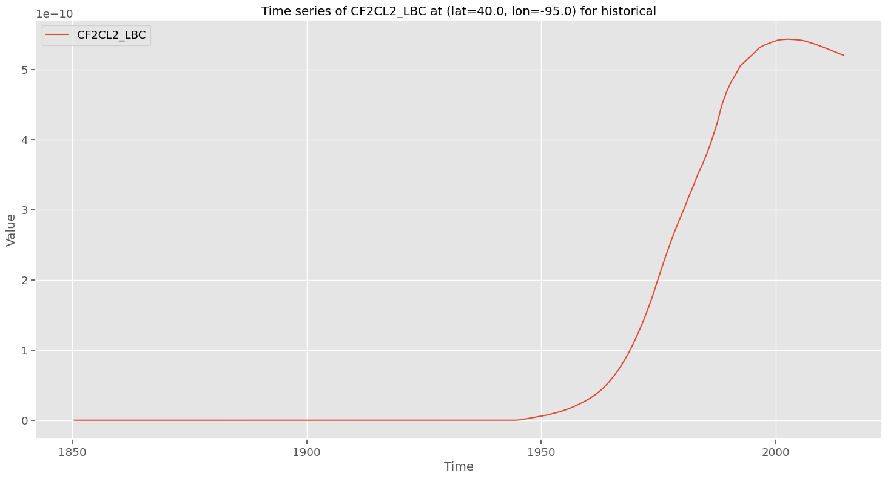
CF2CL2_LBC_historical_40.0_-95.0
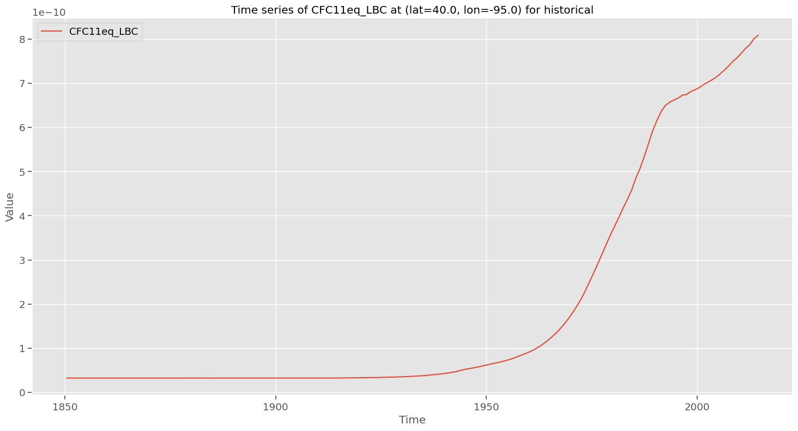
CFC11eq_LBC_historical_40.0_-95.0
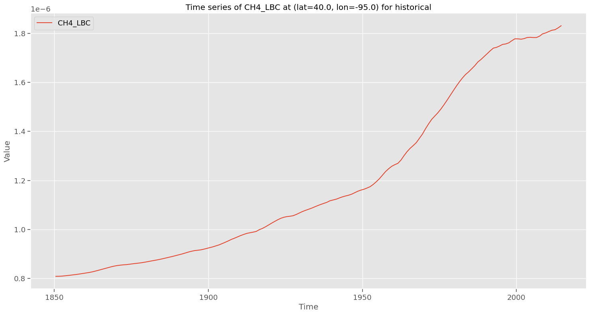
CH4_LBC_historical_40.0_-95.0
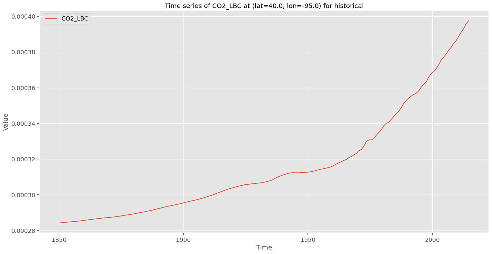
CO2_LBC_historical_40.0_-95.0
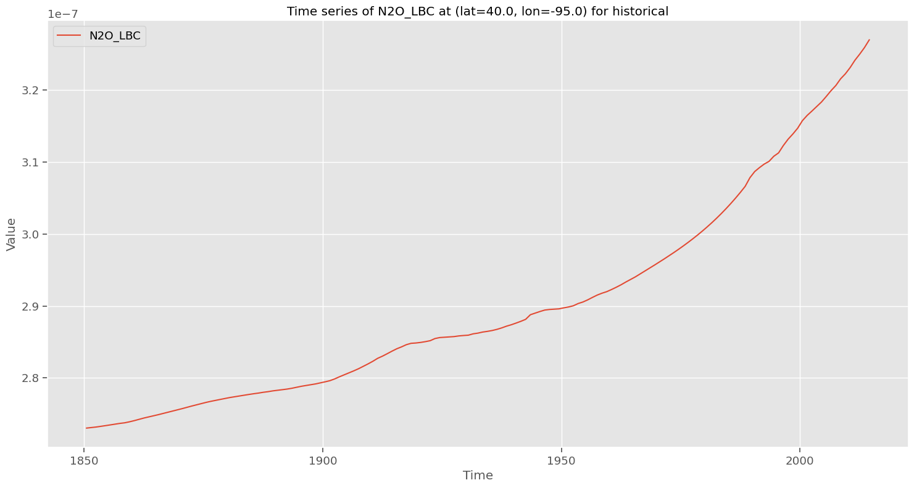
N2O_LBC_historical_40.0_-95.0
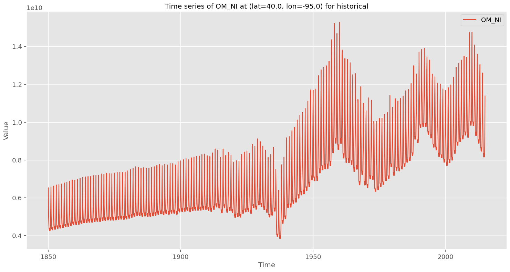
OM_NI_historical_40.0_-95.0
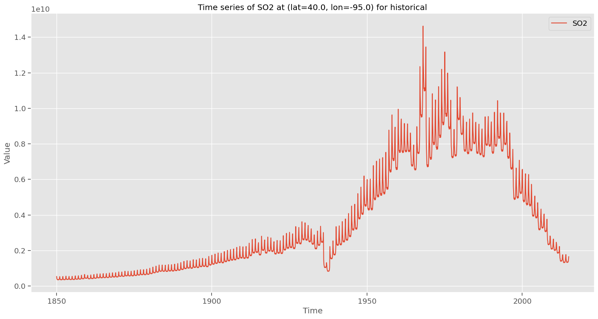
SO2_historical_40.0_-95.0
SO4_PR_historical_40.0_-95.0
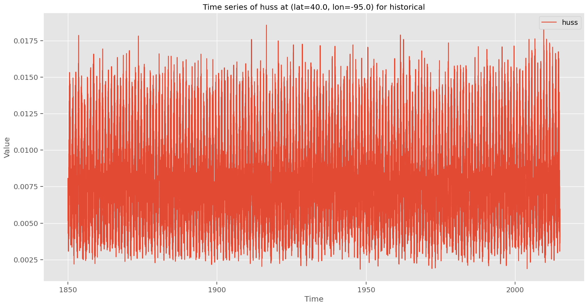
huss_historical_40.0_-95.0
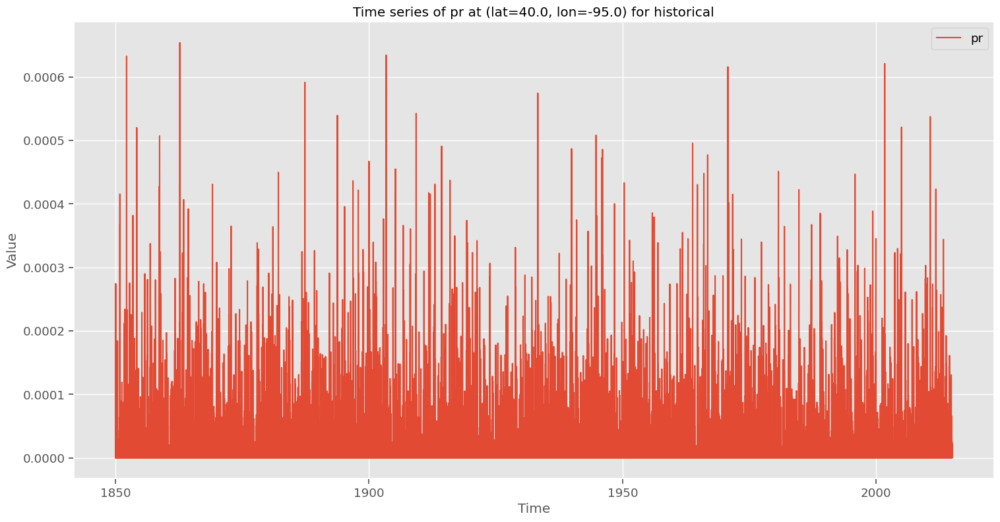
pr_historical_40.0_-95.0
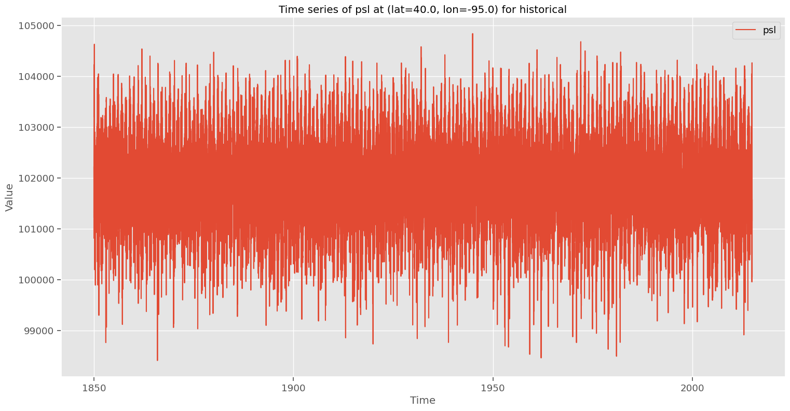
psl_historical_40.0_-95.0
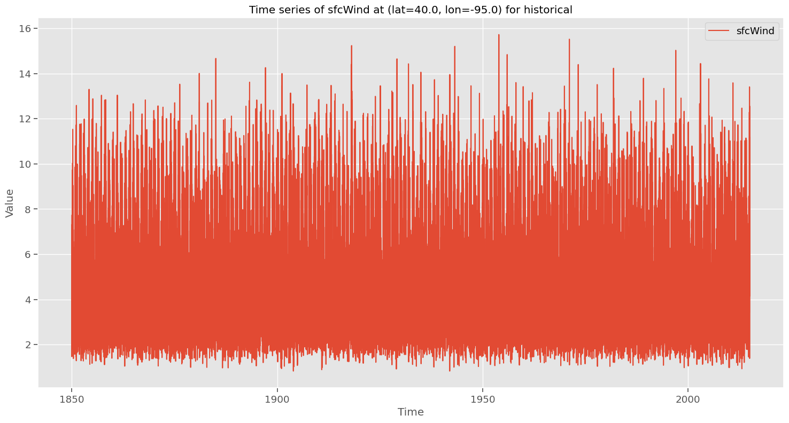
sfcWind_historical_40.0_-95.0
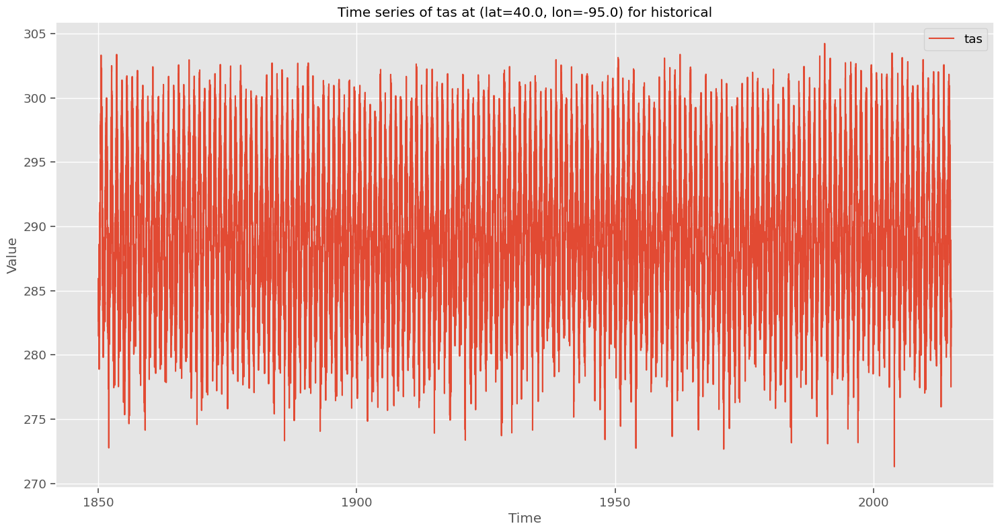
tas_historical_40.0_-95.0
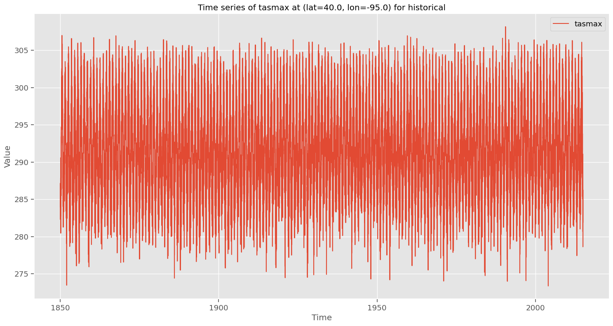
tasmax_historical_40.0_-95.0
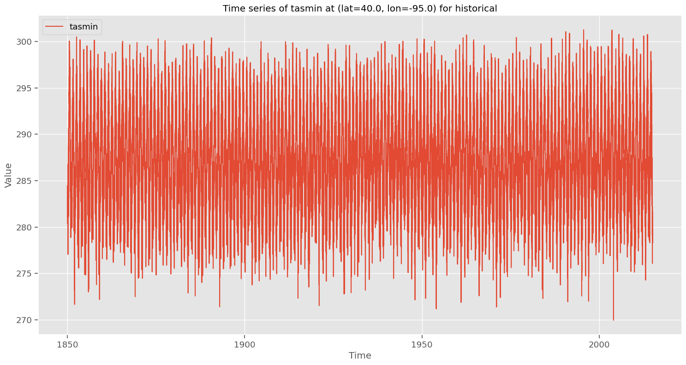
tasmin_historical_40.0_-95.0